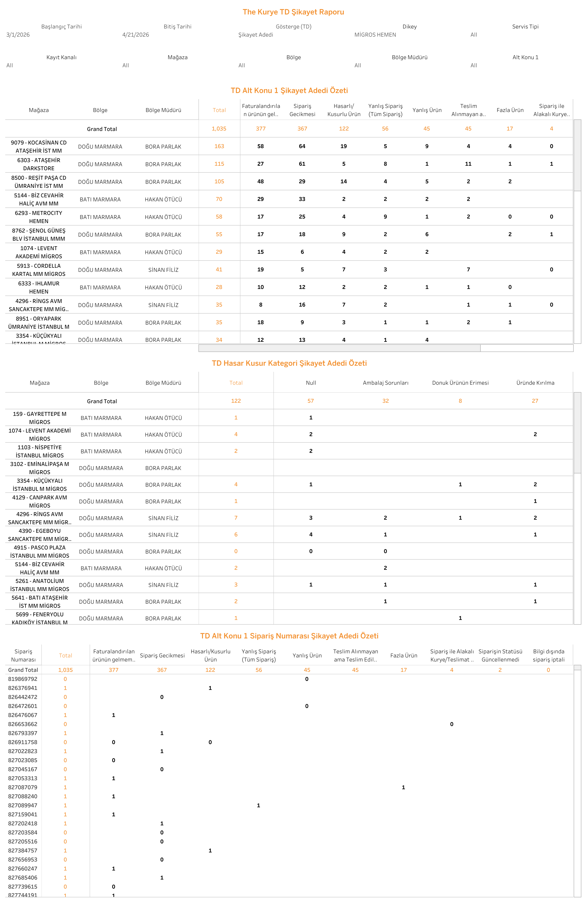

Canlı Rapora Erişin
Güncel şikayet verilerini Tableau üzerinde interaktif olarak görüntüleyin.
Dashboard Hakkında
Ne Gösterir?
The Kurye Şikayet Raporu, The Kurye operasyonuna ait müşteri şikayetlerini çok boyutlu analiz eder. Şikayet kategorisi, mağaza ve bölge bazında dağılımı ile şikayet oranlarını dönemsel olarak sunar.
- Şikayet Kategorileri: Şikayet türlerine göre dağılım ve trend analizi
- Mağaza Bazında: Hangi mağazalardan en fazla şikayet geldiğini gösterir
- Bölge Bazında: Şikayetlerin coğrafi dağılımı ve bölge karşılaştırması
- Dönemsel Trend: Şikayet sayısının zaman bazında değişimi ve oran analizi
- Şikayet Detayı: Şikayet tarihi, kategorisi ve ilgili sipariş bilgilerini içeren detay tablosu
Dashboard Önizleme

The Kurye Şikayet Raporu — Tableau